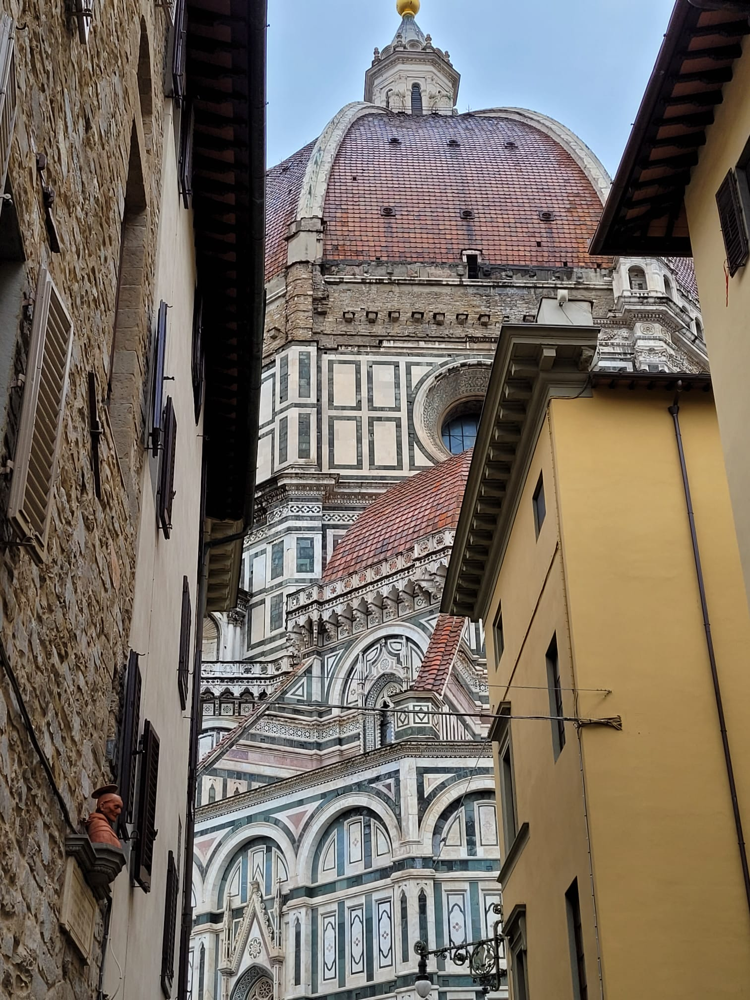
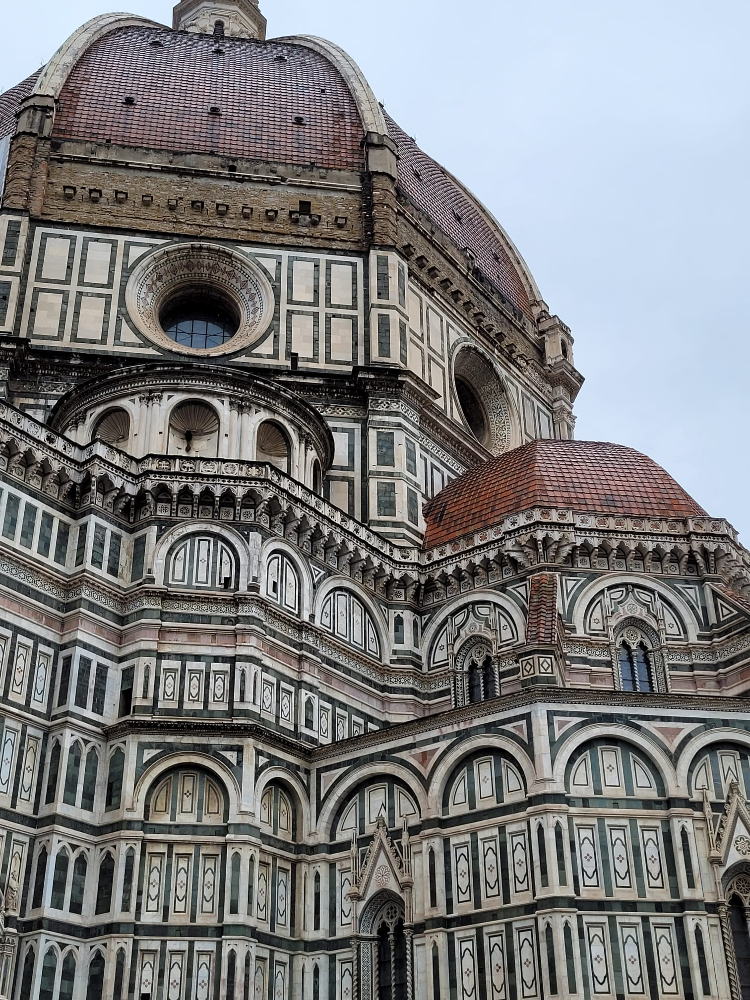
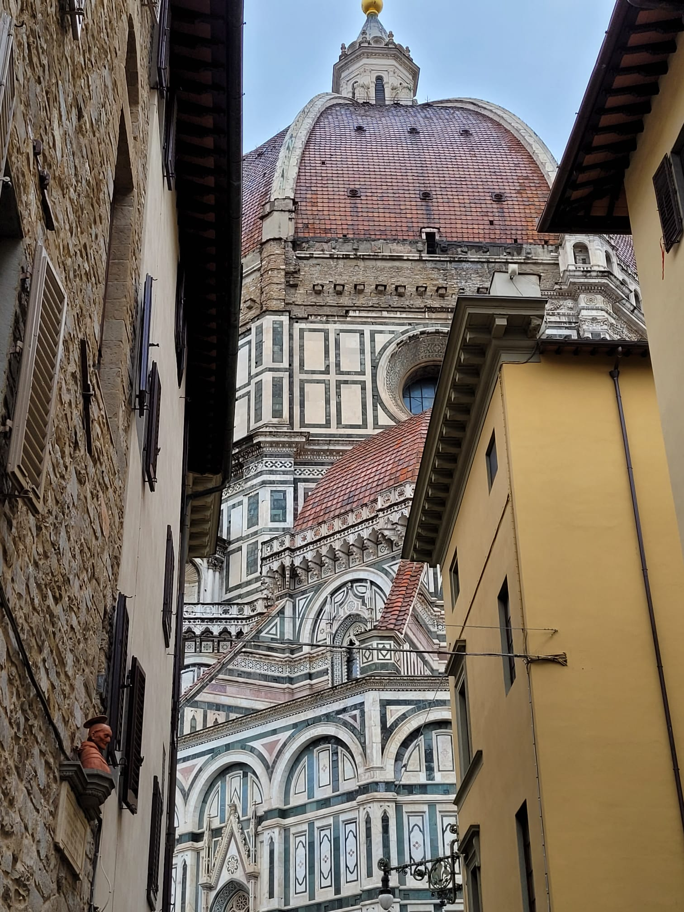
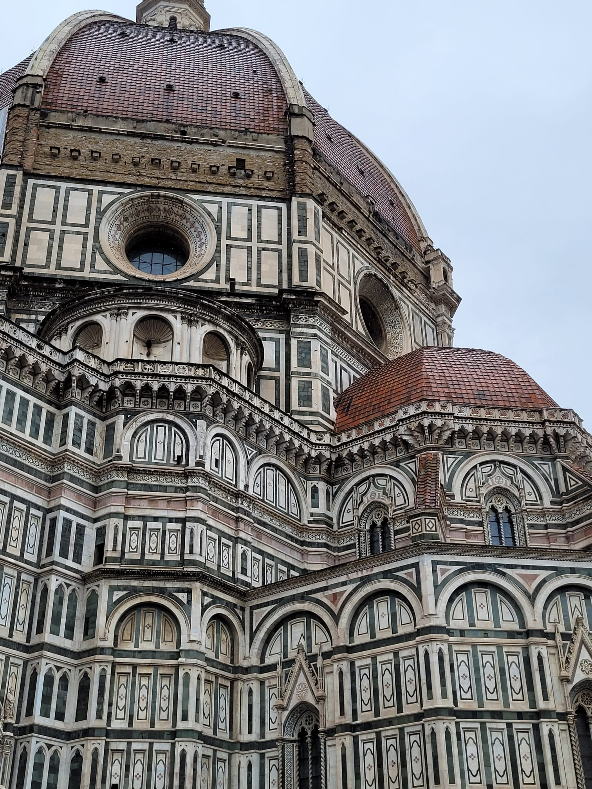

Iniziamo la nostra gita con la prima tappa: Piazza della Signoria, situata nel cuore della città, dominata da Palazzo Vecchio in cui ha sede il comune di Firenze.
Davanti a Palazzo Vecchio si può ammirare la statua del David di Michelangelo.
Con queste due foto si può ammirare l'interno di Palazzo Vecchio.
Proseguendo spostandoci a sinistra di Palazzo Vecchio, abbiamo avuto la possibilità di visitare la Loggia dei Lanzi, una galleria a cielo aperto con ampie arcate e statue.
 


Dopo aver superato Piazza della Repubblica abbiamo potuto vedere solo dall'esterno il Duomo di Firenze(Cattedrale di Santa Maria del Fiore) e il Battistero di San Giovanni situato davanti alla Cattedrale.
Come ultima tappa abbiamo visitato il Ponte Vecchio, storico e caratteristico ponte di Firenze che passa sopra il fiume Arno.
E' molto famoso perchè è il ponte più antico di Firenze, che collega le due estremità della città, inoltre è abitato ed è ricco di botteghe.